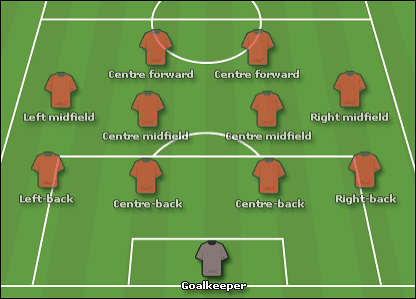
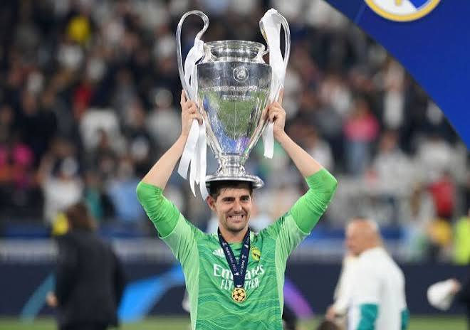
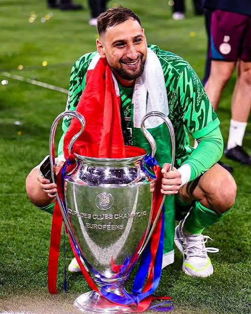
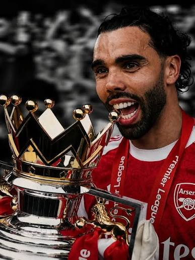

Football goalkeepers
What is a goalkeeper?
A goalkeeper is a special position in football, serving as the teams last line of defense. The main objective of a goalkeeper is to stop the ball from going in the goal. Since trying to stop the ball only using your body was too hard and risky, goalkeepers were allowed and are to use there hands (the only players allowed to use their hands)


The best goalkeepers
The best goalkeepers in the world have to be:
- Reactive
- Quick
- Commanding
These goalkeepers show these traits and that is what makes them the best in the world. These goalkeepers are Thibaut Courtois, Donnarumma, and David Raya.


